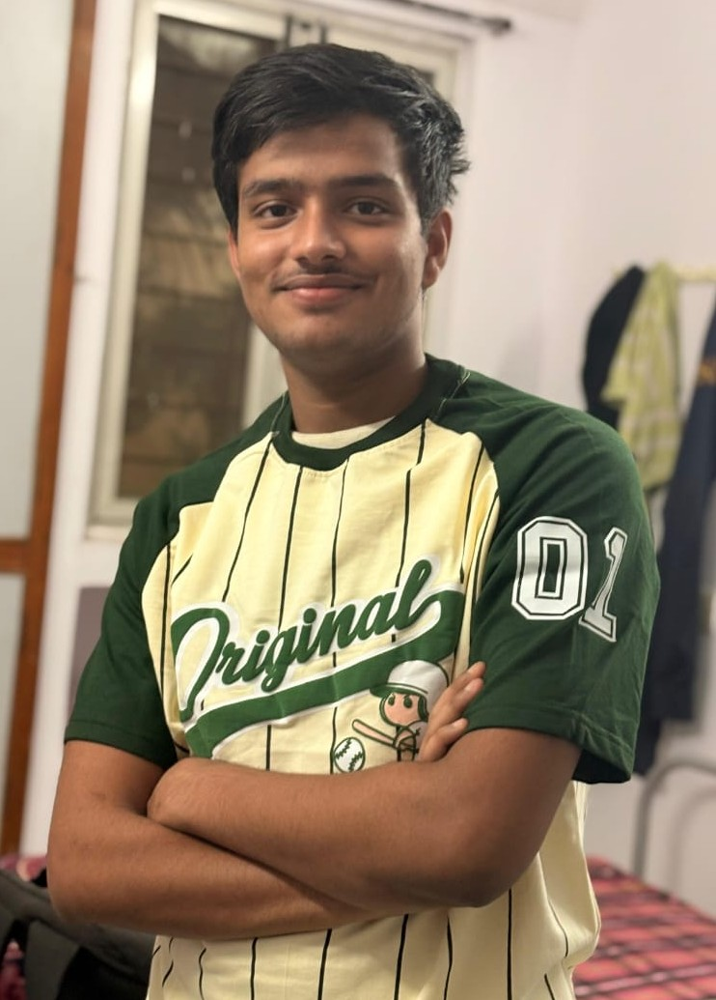

About Me
I am a Student Currently Pursuing Btech in Computer Science At International Institute Of Information Technology Hyderabad.My Hobbies are playing,doing video editing, and doing bakchodi.
As a Student In IIITH I Am Devloping My Skills In Data Structure And Algorithm,Web Devlopment,C,C++ HTML, CSS, JavaScript, databases like SQLite and MongoDB and RISC-V other such coding skills.
Currently, I am focusing heavily on building my personality enhancing my communication and leadership skills .I am also equally interested in studying i will read or try out new tech tools when i will get free time. I am excited to keep learning and building.
My Timeline
-
By taking admission in navodaya i have studied and enjoyed alot.
-
I have got 91.5% in 10 board out of 100% marks by my Hardwork
-
Due to this i have got a chance for studying for jee from the navodaya getting guidence for clearing jee
-
I got total of 92% of marks in the 12th class out of 100% marks by my Hardwork
-
I have cleared the selection test of IIITH.
-
I have done assignement by my hardwork